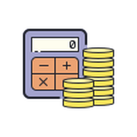

Dashers Finance Manager
Dashers Finance Manager
🟢
🌙
Backup Data
Restore Data
🧭 Guide
⚠️ DEVELOPMENT VERSION ⚠️
Home
Finance
Reports
Properties
Settings
📱
Install Dashers Finance Manager
Get quick access and offline support — install to your device.
Install
Dismiss
Check PWA
📱 Install Dashers Finance Manager on iOS
①
Tap the
Share
button
⎔
②
Scroll down and tap
"Add to Home Screen"
③
Tap
"Add"
in the top right
Got It!